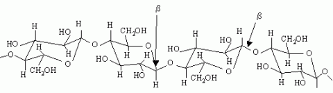
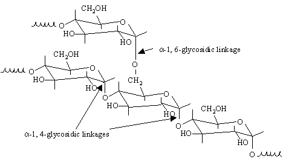

The full-text glossary includes terms used throughout the website and in Biomass Program publications.
Terms are listed alphabetically for easy reference. The term index lists all of the terms defined in the glossary.
A | B | C | D | E | F | G | H | I | J | K | L | M | N | O | P | Q | R | S | T | U | V | W | X | Y | Z
A
acid: A solution that has an excess of hydrogen ions (H+), with a pH of less than 7.
acetic acid: An acid with the structure of C2H4O2. Acetyl groups are bound through an ester linkage to hemicellulose chains—especially xylans—in wood and other plants. The natural moisture present in plants hydrolyzes the acetyl groups to acetic acid, particularly at elevated temperatures.
acid detergent fiber (ADF): Organic matter, often cellulose and lignin based, that is not solubilized after one hour of refluxing in an acid detergent of cetyltrimethylammonium bromide in 1N sulfuric acid.
acid hydrolysis: The treatment of cellulosic, starch, or hemicellulosic materials using acid solutions (usually mineral acids) to break down the polysaccharides to simple sugars.
acid insoluble lignin: Mostly insoluble in mineral acids so it can be analyzed gravimetrically after hydrolyzing the cellulose and hemicellulose fractions of the biomass with sulfuric acid. ASTM E-1721-95 describes the standard method for determining acid insoluble lignin in biomass. See lignin and acid soluble lignin.
acid soluble lignin: A small fraction of the lignin in a biomass sample that is solubilized during the hydrolysis process of the acid insoluble lignin method. May be quantified by ultraviolet spectroscopy.
adsorption: The adhesion of molecules (as in gases, solutions, or liquids) in an extremely thin layer to the surface of solid bodies or liquids with which they are in contact.
Advanced Feedstock Supply System (AFSS): A system or set of processes sized at the characteristic scale of biomass (i.e., small, modular and distributed) that transforms biomass resources into merchandisable, tradable, and aggregatable intermediates.
aerobic: Able to live, grow, or take place only where free oxygen is present.
aerobic fermentation: Fermentation processes that require the presence of oxygen.
agricultural residue: Agricultural crop residues are the plant parts, primarily stalks and leaves, not removed from the fields with the primary food or fiber product. Examples include corn stover (stalks, leaves, husks, and cobs), wheat straw, and rice straw.
alcohol: An organic compound with a carbon bound to a hydroxyl (hydrogen and oxygen, or –OH) group. Examples are methanol, CH3OH, and ethanol, CH3CH2OH.
aldehyde: Any of a class of highly reactive organic chemical compounds characterized by the common group CHO and used in the manufacture of resins, dyes, and organic acids.
aldoses: A monosaccharide that contains an aldehyde (CHO) group. (Source: Voet, D.; Voet, J. G. Biochemistry. New York: John Wiley, 1990.)
algae: Algae are a diverse group of primarily aquatic organisms, often fast growing and able to live in freshwater, seawater, or damp oils. May be unicellular and microscopic or very large, as in the giant kelps.
alkali: Soluble mineral salts with characteristically "basic" properties. A defining characteristic of alkali metals.
alkaline hydrolysis: The use of solutions of sodium hydroxide (or other alkali) in the treatment of cellulosic material (wood) to break down cellulose to simple sugars.
alkali lignin: Lignin obtained by acidification of an alkaline extract of wood.
amylase: Family of enzymes that act together to hydrolyze starch to individual glucose and dextran units.
anaerobic: Living or active in an environment without oxygen.
anaerobic digestion: Degradation of organic matter by microbes that produces a gas comprised mostly of methane and carbon dioxide, usually under wet conditions, in the absence of oxygen.
anhydrous: A material that does not contain water, either adsorbed on its surface or as water of crystallization.
annual removals: The net volume of growing stock trees removed from the inventory during a specified year by harvesting, cultural operations such as timber stand improvement, or land clearing.
aquatic plants: The aquatic biomass resources, such as algae, giant kelp, other seaweed, and water hyacinth. Certain microalgae can produce hydrogen and oxygen while others manufacture hydrocarbons and a host of other products. Microalgae examples include Chlorella, Dunaliella, and Euglena.
arabinan: The polymer of arabinose with a repeating unit of C5H8O4. Can be hydrolyzed to arabinose. (Source: Voet, D.; Voet, J. G. Biochemistry. New York: John Wiley, 1990.)
arabinose: A five-carbon sugar: C5H10O5. A product of the hydrolysis of arabinan found in the hemicellulose fraction of biomass.
Archaea (formerly Archaebacteria): A group of single-celled microorganisms. A single individual or species from this domain is called an archaeon (sometimes spelled "archeon"). They have no cell nucleus or any other organelles within their cells.
aromatic: A chemical that has a benzene ring in its molecular structure (benzene, toluene, xylene). Aromatic compounds have strong, characteristic odors.
asexual reproduction: The naturally occurring ability of some plant species to reproduce asexually through seeds, meaning the embryos develop without a male gamete. This ensures the seeds will produce plants identical to the mother plant.
ash content: Residue remaining after ignition of a sample determined by a definite prescribed procedure.
attainment area: A geographic region where the concentration of a specific air pollutant does not exceed federal standards.
auger: A rotating, screw-type device that moves material through a cylinder. In alcohol production, it is used to transfer grains from storage to the grinding site and from the grinding site to the cooker.
B
B20: A mixture of 20% biodiesel and 80% petroleum diesel based on volume.
bacteria: A small single-cell organism. Bacteria do not have an organized nucleus, but they do have a cell membrane and protective cell wall. Bacteria can be used to ferment sugars to ethanol.
bagasse: Residue remaining after extracting a sugar-containing juice from plants like sugar cane.
bark: The outer protective layer of a tree, including the inner bark and the outer bark. The inner bark is a layer of living bark that separates the outer bark from the cambium. In a living tree, inner bark is generally soft and moist while the outer bark is a layer of dead bark that forms the exterior surface of the tree stem. The outer bark is frequently dry and corky.
barrel (of oil): A liquid measure equal to 42 U.S. gallons (35 Imperial gallons or 159 liters); about 7.2 barrels are equivalent to one tonne of oil (metric), or typically about 306 pounds of oil. One barrel equals 5.6 ft3; for crude oil, one barrel contains about 5.8 x 106 Btu of energy (6.1 GJ, equivalent to 1,700 kWh).
base: A solution that has an excess of hydroxide ions (OH-) in aqueous solution and has a pH greater than 7.
batch distillation: A process in which the liquid feed is placed in a single container and the entire volume is heated (see batch fermentation and batch process).
batch fermentation: Fermentation conducted from start to finish in a single vessel without addition to, or removal of, a major substrate or product stream until the process is complete (see batch distillation and batch process).
batch process: Unit operation where one cycle of feedstock preparation, cooking, fermentation, and distillation is completed before the next cycle is started (see batch distillation and batch fermentation).
beer: A fermented broth that consists of water, ethanol, and small amounts of ether and assorted alcohols.
benzene: A 6-sided structure with three alternating double bonds. A known carcinogen that is an aromatic component of gasoline.
biobased product: The term 'biobased product' as defined by Farm Security and Rural Investment Act (FSRIA), means a product determined by the U.S. Secretary of Agriculture to be a commercial or industrial product (other than food or feed), that is composed in whole or in significant part, of biological products or renewable domestic agricultural materials (including plant, animal, and marine materials) or forestry materials.
bioconversion (or biochemical conversion): A general term describing the use of biological systems to transform one compound into another. Examples are digestion of organic wastes or sewage by microorganisms to produce methane and the synthesis of organic compounds from carbon dioxide and water by plants.
biodiesel: A biodegradable transportation fuel for use in diesel engines that is produced through the transesterfication of organically derived oils or fats. It may be used either as a replacement for or as a component of diesel fuel.
bioeconomy: The global industrial transition to sustainably utilizing renewable aquatic and terrestrial resources in energy, intermediate, and final products for economic, environmental, social, and national security benefits.
bioenergy: Energy produced from biomass.
biofuel intermediate: A biomass-based feedstock that serves as a petroleum replacement in downstream refining, (i.e., sugars, intermediate chemical building blocks, bio-oils, and gaseous mixtures). Algal biofuel intermediates include extracted lipids, lipid-extracted biomass, or bio-oil resulting from hydrothermal liquefaction.
biofuels: Biomass converted to liquid or gaseous fuels such as ethanol, methanol, methane, and hydrogen.
biogas: A gaseous mixture of carbon dioxide and methane produced by the anaerobic digestion of organic matter.
biomass: An energy resource derived from organic matter. These include wood, agricultural waste, and other living-cell material that can be burned to produce heat energy. They also include algae, sewage, and other organic substances that may be used to make energy through chemical processes.
biomass processing residues: Byproducts from processing all forms of biomass that have significant energy potential. For example, making solid wood products and pulp from logs produces bark, shavings and sawdust, and spent pulping liquors. Because these residues are already collected at the point of processing, they can be convenient and relatively inexpensive sources of biomass for energy.
biopower: The use of biomass feedstock to produce electric power or heat through direct combustion of the feedstock, through gasification and then combustion of the resultant gas, or through other thermal conversion processes. Power is generated with engines, turbines, fuel cells, or other equipment.
bioproduct: Materials that are derived from renewable feedstocks. Examples include paper, ethanol, and palm oil.
bioprospecting: The search for plant and animal species from which medicinal drugs and other commercially valuable compounds can be obtained.
biorefinery: A facility that processes and converts biomass into value-added products. These products can range from biomaterials to fuels such as ethanol or important feedstocks for the production of chemicals and other materials. Biorefineries can be based on a number of processing platforms using mechanical, thermal, chemical, and biochemical processes.
black liquor: Solution of lignin-residue and the pulping chemicals used to extract lignin during the manufacture of paper.
BODIPY: (boron-dipyrromethene), is a class of fluorescent dyes, used in a variety of imaging applications.
bone-dry-unit (BDU): 2,400 pounds of moisture-free wood, unless otherwise stated.
bottoming cycle: A cogeneration system in which steam is used first for process heat and then for electric power production.
British thermal unit (Btu): The amount of heat required to raise the temperature of one pound of water 1°F under one atmosphere of pressure and a temperature of 60°F–61°F.
by-product: Leftover material, generated as a result of an industrial process or as a breakdown product in a living system.
C
cambium: The layer of reproducing cells between the inner bark (phloem) and the wood (xylem) of a tree that repeatedly subdivides to form new wood and bark cells.
capacity: The maximum instantaneous output of an energy conversion device, often expressed in kilowatts (kW) or megawatts (MW).
capital cost: The total investment needed to complete a project and bring it to an operable status. The cost of construction of a new plant. The expenditures for the purchase or acquisition of existing facilities.
carbohydrate: A class of organic compounds made up of carbon, hydrogen, and oxygen and having approximately the formula (CH2O)n; includes cellulosics, starches, and sugars. (Source: Milne, T.A.; Brennan, A.H.; Glenn, B.H. Sourcebook of Methods of Analysis for Biomass Conversion and Biomass Conversion Processes. SERI/SP-220-3548. Golden, CO: Solar Energy Research Institute, February 1990.)
*Organic compounds made up of carbon, hydrogen, and oxygen and having approximately the formula (CH2O)n; includes cellulosics, starches, and sugars. (Source: Milne, T.A.; Brennan, A.H.; Glenn, B.H. Sourcebook of Methods of Analysis for Biomass Conversion and Biomass Conversion Processes. SERI/SP-220-3548. Golden, CO: Solar Energy Research Institute, February 1990.)
carbon dioxide: A colorless, odorless gas produced by the respiration and combustion of carbon-containing fuels, used by plants as food in the photosynthesis process. Represented as CO2.
carbon monoxide: A colorless, odorless, poisonous gas produced by incomplete combustion. Represented as CO.
catalyst: A substance that increases the rate of a chemical reaction without being consumed or produced by the reaction. Enzymes are catalysts for many biochemical reactions.
cellulase: A family of enzymes that break down cellulose into glucose molecules.
cellulose: A carbohydrate that is the principal component of wood. It is made of linked glucose molecules (a six-carbon sugar) that strengthen the cell walls of most plants. Cellulosic/woody biomass contains cellulose components.

Cetane (also called Hexadecane): An alkane hydrocarbon with the chemical formula C16H34. Consists of a chain of 16 carbon atoms, with 3 hydrogen atoms bonded to the 2 end carbon atoms, and 2 hydrogens bonded to each of the 14 other carbon atoms. Cetane is often used as a short-hand for cetane number, a measure of the detonation of diesel fuel. Cetane ignites very easily under compression; for this reason, it is assigned a cetane number of 100, and serves as a reference for other fuel mixtures.
Cetane number: A measurement of the combustion quality of diesel fuel during compression ignition. It serves as an expression of diesel fuel quality among a number of other measurements that determine overall diesel fuel quality (often abbreviated as CN).
CFM: Cubic feet per minute (1,000 cfm = 0.472 cubic meters per second, m3/s).
char: The remains of solid biomass that have been incompletely combusted (e.g., charcoal, if wood is incompletely burned).
chips: Small fragments of wood chopped or broken by mechanical equipment. Total tree chips include wood, bark, and foliage. Pulp chips or clean chips are free of bark and foliage.
co-firing: The use of a mixture of two fuels within the same combustion chamber.
co-generation: The technology of producing electric energy and another form of useful energy (usually thermal) for industrial, commercial, or domestic heating or cooling purposes through the sequential use of the energy source.
co-products: The resulting substances and materials that accompany the production of a fuel product.
coarse materials: Wood residues suitable for chipping, such as slabs, edgings, and trimmings.
combined cycle: Two or more generation processes in a series or in parallel, configured to optimize the energy output of the system.
combined-cycle power plant: The combination of a gas turbine and a steam turbine in an electric generation plant. The waste heat from the gas turbine provides the heat energy for the steam turbine.
combined heat and power: More commonly referred to as CHP. See co-generation.
combustion: A chemical reaction between a fuel and oxygen that produces heat (and usually light).
combustion air: The air fed to a fire to provide oxygen for combustion of fuel.
combustion efficiency: Actual heat produced by combustion, divided by total heat potential of the fuel consumed.
commercial forest land: Forested land which is capable of producing new growth at a minimum rate of 20 cubic feet per acre per year, excluding lands withdrawn from timber production by statute or administrative regulation.
commercial species: Tree species suitable for industrial wood products.
conifer: A tree, usually evergreen, with cones and needle-shaped or scalelike leaves, producing wood known commercially as softwood.
Conservation Reserve Program (CRP): The Conservation Reserve Program (CRP) is a land conservation program administered by the USDA. In exchange for a yearly rental payment, farmers enrolled in the program agree to remove environmentally sensitive land from agricultural production and plant species that will improve environmental health and quality. Contracts for land enrolled in CRP are 10-15 years in length. The long-term goal of the program is to re-establish valuable land cover to help improve water quality, prevent soil erosion, and reduce loss of wildlife habitat.
continuous fermentation: A steady-state fermentation system in which substrate is continuously added to a fermenter while products and residues are removed at a steady rate.
coppice regeneration: The ability of certain hardwood species to regenerate by producing multiple new shoots from a stump left after harvest.
cord: A stack of wood consisting of 128 cubic feet (3.62 cubic meters). A cord has standard dimensions of 4 x 4 x 8 feet, including air space and bark. One cord contains about 1.2 U.S. tons (oven-dry) (i.e., 2,400 pounds or 1,089 kg).
corn stover: The refuse of a corn crop after the grain is harvested.
cracking: A reduction of molecular weight by breaking bonds, which may be done by thermal, catalytic, or hydrocracking. Heavy hydrocarbons, such as fuel oils, are broken up into lighter hydrocarbons such as gasoline.
cropland: Total cropland includes five components; cropland harvested, crop failure, cultivated summer fallow, cropland used only for pasture, and idle cropland.
cropland used for crops: Includes cropland harvested, crop failure, and cultivated summer fallow. Cropland harvested includes row crops and closely sown crops; hay and silage crops; tree fruits, small fruits, berries, and tree nuts; vegetables and melons; and miscellaneous other minor crops.
cropland pasture: Land used for long-term crop rotation. However, some cropland pasture is marginal for crop uses and may remain in pasture indefinitely. This category also includes land that was used for pasture before crops reached maturity and some land used for pasture that could have been cropped without additional improvement.
cull tree: A live tree, 5.0 inches in diameter at breast height (dbh) or larger, that is non-merchantable for saw logs now or prospectively because of rot, roughness, or species. (See definitions for rotten and rough trees.)
D
dehydration: The removal of the water from any substance.
dehydrogenation: The removal of hydrogen from a chemical compound.
denaturant: A substance that makes ethanol unfit for consumption.
dewatering: The separation of free water from the solids portion of spent mash, sludge, or whole stillage by screening, centrifuging, filter pressing, or other means.
diameter at breast height (dbh): The diameter measured at approximately breast height from the ground (often between 1.3 and 1.5 meters depending on the country and tree type).
diatom: A major group of algae with distinctive, transparent cell walls made of hydrated silica.
digester: A biochemical reactor in which anaerobic bacteria are used to decompose biomass or organic wastes into methane and carbon dioxide.
disaccharides: The class of compound sugars that yields two monosaccharide units upon hydrolysis; examples are sucrose, maltose, and lactose.
discount rate: A rate used to convert future costs or benefits to their present value.
distillate: The portion of a liquid that is removed as vapor and condensed during a distillation process.
distillation: The process by which the components of a liquid mixture are separated by boiling and recondensing the resultant vapors. The main components in the case of alcohol production are water and ethanol.
distillers dried grains (ddg): The dried grain byproduct of the grain fermentation process, which may be used as a high-protein animal feed.
downdraft gasifier: A gasifier in which the product gases pass through a combustion zone at the bottom of the gasifier.
drop-in fuel: A substitute for conventional fuel that is completely interchangeable and compatible with conventional fuel. A drop-in fuel does not require adaptation of the engine, fuel system, or the fuel distribution network and can be used "as is" in currently available engines in pure form and/or blended in any amount with other fuels.
drying: Moisture removal from biomass to improve serviceability and utility.
dry ton: 2,000 pounds of biomass on a moisture-free basis.
dutch oven furnace: One of the earliest types of furnaces. A large, rectangular box lined with firebrick (refractory) on the sides and top. Commonly used for burning wood. Heat is stored in the refractory and radiated to a conical fuel pile in the center of the furnace.
E
E-10: A mixture of 10% ethanol and 90% gasoline based on volume. In the United States, it is the most commonly found mixture of ethanol and gasoline.
E-16: A low-level blend composed of 10%-15% ethanol and gasoline. In 2011, EPA approved E15 for use in model year 2001 and newer conventional vehicles.
E-85: Also known as flex-fuel. A high-level ethanol-gasoline blend containing 51%-83% ethanol, depending on geography and season and qualifies as an alternative fuel under EPAct.
effluent: The liquid or gas discharged after processing activities, usually containing residues from such use. Also discharge from a chemical reactor.
elemental analysis: The determination of the mass fraction of carbon, hydrogen, nitrogen, oxygen, and additional hetroatoms (sulfur, chlorine, ash, etc.) in a sample. See ultimate analysis.
emissions: Waste substances released into the air or water. See effluent.
energy crop: A commodity (crop) grown specifically for its fuel value. These include food crops such as corn and sugarcane and nonfood crops such as poplar trees and switchgrass.
enzymatic hydrolysis: Use of an enzyme to promote the conversion, by reaction with water, of a complex substance into two or more smaller molecules.
enzyme: A protein or protein-based molecule that speeds up chemical reactions occurring in living things. Enzymes act as catalysts for a single reaction, converting a specific set of reactants into specific products.
ester: A compound formed from the reaction between an acid and an alcohol. In esters of carboxylic acids, the -COOH group of the acid and the -OH group of the alcohol lose a water and become a -COO linkage.
ethanol (CH3CH2OH): A colorless, flammable liquid produced by fermentation of sugars. Ethanol is used as a fuel oxygenate; the alcohol found in alcoholic beverages.
externality: A cost or benefit not accounted for in the price of goods or services. Often refers to the cost of pollution and other environmental impacts.
extractives: Any number of different compounds in biomass that are not an integral part of the cellular structure. The compounds can be extracted from wood by means of polar and non-polar solvents including hot or cold water, ether, benzene, methanol, or other solvents that do not degrade the biomass structure. The types of extractives found in biomass samples are entirely dependent upon the sample itself. (Source: Fengel, D.; Gerd, W. Wood Chemistry, Ultrastructure, and Reactions. Berlin-New York: Walter de Gruyter, 1989.)
F
fast pyrolysis: Pyrolysis in which reaction times are short, resulting in higher yields of certain fuel products ranging from primary oils to olefins and aromatics depending on the severity of conditions.
fatty acid: A fatty acid is a carboxylic acid (an acid with a -COOH group) with long hydrocarbon side chains.
feedstock: Any material used directly as a fuel, or converted to another form of fuel or energy product. Bioenergy feedstocks are the original sources of biomass. Examples of bioenergy feedstocks include corn, crop residue, and woody plants.
Feller-Buncher: A self-propelled machine that cuts trees with giant shears near ground level and then stacks the trees into piles for skidding.
fermentation: A biochemical reaction that breaks down complex organic molecules (such as carbohydrates) into simpler materials (such as ethanol, carbon dioxide, and water). Bacteria or yeasts can ferment sugars to ethanol.
fiber products: Products derived from fibers of herbaceous and woody plant materials. Examples include pulp, composition board products, and wood chips for export.
fine materials: Wood residues not suitable for chipping, such as planer shavings and sawdust.
firm power (firm energy): That portion of a customer's energy load for which service is assured by the utility provider. Power that is guaranteed by the supplier to be available at all times during a period covered by a commitment.
fixed bed: A collection of closely spaced particles through which gases move up or down for purposes of gasification or combustion.
fixed carbon: The carbon that remains after heating in a prescribed manner to decompose thermally unstable components and distill volatiles. Part of the proximate analysis group.
flash point: The temperature at which a combustible liquid will ignite when a flame is held over the liquid; anhydrous ethanol will flash at 51°F.
flocculation: The process by which individual particles of algae aggregate into clotlike masses or precipitate into small lumps. Flocculation occurs as a result of a chemical reaction between the algae and another substance, usually salt water.
fluidized bed: A gasifier or combustor design in which feedstock particles are kept in suspension by a bed of solids kept in motion by a rising column of gas. The fluidized bed produces approximately isothermal conditions with high heat transfer between the particles and gases.
fly ash: Small ash particles carried in suspension in combustion products.
forest health: A condition of ecosystem sustainability and attainment of management objectives for a given forest area. Usually considered to include green trees, snags, resilient stands growing at a moderate rate, and endemic levels of insects and disease. Natural processes still function or are duplicated through management intervention.
forest land: Land at least 10% stocked by forest trees of any size, including land that formerly had such tree cover and that will be naturally or artificially regenerated. Forest land includes transition zones, such as areas between heavily forested and non-forested lands that are at least 10% stocked with forest trees and forest areas adjacent to urban and built-up lands.
forestry residues: Includes tops, limbs, and other woody material not removed in forest harvesting operations in commercial hardwood and softwood stands, as well as woody material resulting from forest management operations such as pre-commercial thinnings and removal of dead and dying trees.
fossil fuel: A carbon or hydrocarbon fuel formed in the ground from the remains of dead plants and animals. It takes millions of years to form fossil fuels. Oil, natural gas, and coal are fossil fuels.
fungi: Plant-like organisms with cells with distinct nuclei surrounded by nuclear membranes, incapable of photosynthesis. Fungi are decomposers of waste organisms and exist as yeast, mold, or mildew.
fuel cycle: The series of steps required to produce electricity. The fuel cycle includes mining or otherwise acquiring the raw fuel source, processing and cleaning the fuel, transport, electricity generation, waste management, and plant decommissioning.
fuel handling system: A system for unloading wood fuel from vans or trucks, transporting the fuel to a storage pile or bin, and conveying the fuel from storage to the boiler or other energy conversion equipment.
fuel treatment evaluator (FTE): A strategic assessment tool capable of aiding the identification, evaluation, and prioritization of fuel treatment opportunities.
fuelwood: Wood used for conversion to some form of energy, primarily in residential use.
furfural: An aldehyde derivative of certain biomass conversion processes; used as a solvent.
furnace: An enclosed chamber or container used to burn biomass in a controlled manner to produce heat for space or process heating.
G
galactan: The polymer of galactose with a repeating unit of C6H10O5. Found in hemicellulose; it can be hydrolyzed to galactose.
galactose: A six-carbon sugar with the formula C6H12O6. A product of hydrolysis of galactan found in the hemicellulose fraction of biomass.
gasification: Any chemical or heat process used to convert a feedstock to a gaseous fuel.
gasifier: A device that converts solid fuel to gas. Generally refers to thermochemical processes.
gas turbine: Sometimes called a combustion turbine; a gas turbine converts the energy of hot compressed gases (produced by burning fuel in compressed air) into mechanical power, which can be used to generate electricity.
genetic selection: Application of science to systematic improvement of a population, e.g. through selective breeding.
Geographic Information Systems (GIS): Technology used as a framework for gathering and organizing spatial data and related information so it can be displayed and analyzed. A GIS is an integrated collection of computer software and data used to view and manage information about geographic places, analyze spatial relationships, and model spatial processes. A GIS enables users to quickly visualize data, extract trends, optimize routes, and interpret other relationships via maps and charts. The technology helps solve problems and answer questions by presenting complex data in understandable and easily sharable ways.
gigawatt (GW): A measure of electrical power equal to 1 billion watts (1,000,000 kW). A large coal or nuclear power station typically has a capacity of about 1 GW.
global warming: A term used to describe the increase in average global temperatures due to the greenhouse effect. Scientists generally agree that the Earth's surface has warmed by about 1ºF in the past 140 years.
glucan: The polymer of glucose with a repeating unit of C6H10O5. Cellulose is a form of glucan. Can be hydrolyzed to glucose. (Source: Voet, D.; Voet, J. G. Biochemistry. New York: John Wiley, 1990.)
glucose (C6H12O6): A six-carbon fermentable sugar.
glycerin (C3H8O3): A liquid by-product of biodiesel production. Used in the manufacture of dynamite, cosmetics, liquid soaps, inks, and lubricants.
grassland pasture and range: Grassland pasture and range comprises all open land used primarily for pasture and grazing, including shrub and brush land types of pasture; grazing land with sagebrush and scattered mesquite; and all tame and native grasses, legumes, and other forage used for pasture or grazing. Because of the diversity in vegetative composition, grassland pasture and range are not always clearly distinguishable from other types of pasture and range. At one extreme, permanent grassland may merge with cropland pasture, or grassland may often be found in transitional areas with forested grazing land.
green diesel: A diesel fuel substitute made from renewable feedstocks by using traditional distillation methods. It is also known as renewable diesel.
green gasoline: A liquid identical to petroleum-based gasoline, but is produced from biomass such as switchgrass and poplar trees. In the United States, it is still in the development stages. It is also known as renewable gasoline.
greenhouse effect: The heat effect due to the trapping of the sun's radiant energy, so that it cannot be reradiated. In the earth's atmosphere, the radiant energy is trapped by greenhouse gases produced from both natural and human sources.
greenhouse gas: A gas, such as water vapor, carbon dioxide, tropospheric ozone, methane, and low level ozone, which contributes to the greenhouse effect.
grid: An electric utility's system for distributing power.
gross heat of combustion: See higher heating value.
growing stock: A classification of timber inventory that includes live trees of commercial species meeting specified standards of quality or vigor. Cull trees are excluded. When associated with volume, includes only trees 5.0 inches dbh and larger.
guaiacyl: A chemical component of lignin. It has a six-carbon aromatic ring with one methoxyl group attached. It is the predominant aromatic structure in softwood lignins. See syringyl.
H
habitat: The area where a plant or animal lives and grows under natural conditions. Habitat includes living and non-living attributes and provides all requirements for food and shelter.
hardwood: One of the botanical groups of dicotyledonous trees that have broad leaves in contrast to the conifers or softwoods. The botanical name is angiosperms; hardwood has no reference to the actual hardness of the wood. Short-rotation, fast growing hardwood trees are being developed as future energy crops.
heat rate: The amount of fuel energy required by a power plant to produce one kilowatt-hour of electrical output. A measure of generating station thermal efficiency, generally expressed in Btu per net kWh. It is computed by dividing the total Btu content of fuel burned for electric generation by the resulting net kWh generation.
heat transfer efficiency: Useful heat output released / actual heat produced in the firebox.
heating value: See higher heating value and lower heating value.
hectare: Common metric unit of area, equal to 2.47 acres. 100 hectares = 1 square kilometer.
hemicellulose: Consists of short, highly branched chains of sugars. In contrast to cellulose, which is a polymer of only glucose, a hemicellulose is a polymer of five different sugars. It contains five-carbon sugars (usually D-xylose and L-arabinose), six-carbon sugars (D-galactose, D-glucose, and D-mannose), and uronic acid. The sugars are highly substituted with acetic acid. The branched nature of hemicellulose renders it amorphous and relatively easy to hydrolyze to its constituent sugars compared to cellulose. When hydrolyzed, the hemicellulose from hardwoods releases products high in xylose (a five-carbon sugar). The hemicellulose contained in softwoods, by contrast, yields more six-carbon sugars.
herbaceous plants: Non-woody species of vegetation, usually of low lignin content such as grasses.
herbaceous energy crops: Perennial non-woody crops that are harvested annually, though they may take two to three years to reach full productivity. Examples include: Switchgrass (Panicum virgatum), Reed canarygrass (Phalaris arundinacea), Miscanthus (Miscanthus x giganteus), and Giant reed (Arundo donax).
hexose: Any of various simple sugars that have six carbon atoms per molecule (e.g., glucose, mannose, and galactose).
higher heating value (HHV): The heat produced by combustion of one unit of substance at constant volume in an oxygen bomb calorimeter under specified conditions. The conditions are: initial oxygen pressure of 2.0–4.0 MPa (20–40 atm), final temperature of 20º–35ºC, products in the form of ash, liquid water, gaseous CO2and N2, and dilute aqueous HCl and H2SO4. It is assumed that if significant quantities of metallic elements are combusted, they are converted to their oxides. In the case of materials such as coal, wood, or refuse, if small or trace amounts of metallic elements are present, they are unchanged during combustion and are part of the ash. Also known as gross heat of combustion.
holocellulose: The total carbohydrate fraction of wood; cellulose plus hemicellulose.
horsepower (electrical horsepower; hp): A unit for measuring the rate of mechanical energy output, usually used to describe the maximum output of engines or electric motors. 1 hp = 550 foot-pounds per second = 2,545 Btu per hour = 745.7 watts = 0.746 kW.
hybrid: The offspring of genetically different parents; combines the characteristics of the parents or exhibits completely new traits. The term is applied as well to the progeny from matings within species and to those between species.
hydrocarbon (HC): An organic compound molecule that contains only hydrogen and carbon.
hydrocarbon emissions: In vehicle emissions, these are usually vapors of hydrogen-carbon compounds created from incomplete combustion or from vaporization of liquid gasoline. Emissions of hydrocarbons contribute to ground-level ozone.
hydrocracking: A process in which hydrogen is added to organic molecules at high pressures and moderate temperatures; usually used as an adjunct to catalytic cracking.
hydrogenation: Treatment of substances with hydrogen and suitable catalysts at high temperature and pressure to saturate double bonds.
hydrolysis: A chemical reaction that releases sugars that are normally linked together in complex chains. In ethanol production, hydrolysis reactions are used to break down the cellulose and hemicellulose in the biomass.
hydrothermal liquefaction: In the hydrothermal liquefaction pathway, bio-oils are separated from water via high heat and pressure so they can be catalytically hydrotreated and converted to advanced hydrocarbon fuels. This pathway is especially suited for conversion of wet feedstocks, such as algae, because no drying step is required, and the high-quality oil produced is lower in oxygen than bio-oil derived from other conversion processes.
hydrotreating: Refinery catalytic process in which hydrogen is contacted with petroleum intermediate or product streams to remove impurities, such as oxygen, sulfur, or unsaturated hydrocarbons.
I
idle cropland: Land in cover and soil improvement crops; cropland on which no crops were planted. Some cropland is idle each year for various physical and economic reasons. Acreage diverted from crops to soil-conserving uses (if not eligible for and used as cropland pasture) under federal farm programs is included in this component. Cropland enrolled in the federal Conservation Reserve Program (CRP) is included in idle cropland.
incinerator: Any device used to burn solid or liquid residues or wastes as a method of disposal. In some incinerators, provisions are made for recovering the heat produced.
inclined grate: A type of furnace in which fuel enters at the top part of a grate in a continuous ribbon, passes over the upper drying section where moisture is removed, and descends into the lower burning section. Ash is removed at the lower part of the grate.
incremental energy costs: The cost of producing and/or transporting the next available unit of electrical energy above a previously determined base cost.
independent power producer: A power production facility that is not part of a regulated utility.
indirect liquefaction: Conversion of biomass to a liquid fuel through a synthesis gas intermediate step.
industrial wood: All commercial roundwood products, except fuelwood.
inoculum: Microorganisms produced from a pure culture; used to start a new culture in a larger vessel than that in which they were grown.
J
joule: Metric unit of energy, equivalent to the work done by a force of one Newton applied over a distance of one meter (= 1 kg m2/s2). One joule (J) = 0.239 calories (1 calorie = 4.187 J).
JP-8 (or JP8 for "Jet Propellant 8"): A kerosene-based jet fuel, specified in 1990 by the U.S. government, as a replacement for the JP-4 fuel; the U.S. Air Force replaced JP-4 with JP-8 completely by the fall of 1996, to use a less flammable, less hazardous fuel for better safety and combat survivability. The U.S. Navy uses a similar formula, JP-5.
K
kilowatt (kW): A measure of electrical power equal to 1,000 watts. 1 kW = 3412 Btu/hr = 1.341 horsepower. See also watt.
kilowatt hour (kWh): A measure of energy equivalent to the expenditure of one kilowatt for one hour. For example, 1 kWh will light a 100-watt light bulb for 10 hours. 1 kWh = 3,412 Btu.
Klason lignin: Lignin obtained from wood after the non-lignin components have been removed with a prescribed sulfuric acid treatment. A specific type of acid-insoluble lignin analysis.
Kraft process: Chemical pulping process in which lignin is dissolved by a solution of sodium hydroxide and sodium sulfide.
L
landfill gas: Biogas produced from the natural degradation of organic material in landfills.
levelized life-cycle cost: The present value of the cost of a resource, including capital, financing and operating costs, expressed as a stream of equal annual payments. This stream of payments can be converted to a unit cost of energy by dividing the annual payment amount by the annual kilowatt-hours produced or saved. By levelizing costs, resources with different lifetimes and generating capabilities can be compared.
life-cycle assessment (LCA): LCA addresses the environmental impacts throughout a product's life cycle from raw material acquisition through production, use, end-of-life treatment, recycling and final disposal (i.e. cradle-to-grave). Also known as life-cycle analysis, ecobalance, and cradle-to-grave analysis.
lignin: A complex polymer that serves as a component of wood and vascular plants, making them firm and rigid. Produces energy in the form of electricity when burned.
lignin methoxy (MeO) to phenlypropanoid (C9) ratio: Lignin empirical formulae are based on ratios of methoxy groups to phenylpropanoid groups (MeO:C9). The general empirical formula for lignin monomers is C9H10O2 (OCH3)n, where n is the ratio of MeO to C9 groups. Where no experimental ratios have been found, they are estimated as follows: 0.94 for softwoods; 1.18 for grasses; 1.4 for hardwoods. These are averages of the lignin ratios found in the literature. Paper products, which are produced primarily from softwoods, are estimated to have an MeO:C9 ratio of 0.94.
lignin pseudo-molecule for modeling: The lignin ratio of methoxy groups to phenylpropanoid groups (MeO:C9) is used to calculate an ultimate analysis for the lignin pseudo-molecule. This ultimate analysis is used to estimate other properties of the molecule, such as its higher heating value and lower heating value.
lignocellulose: Refers to plant materials made up primarily of lignin, cellulose, and hemicellulose.
lower heating value (LLV): The heat produced by combusting one unit of a substance, at atmospheric pressure, under conditions such that all water in the products remains in the form of vapor. The net heat of combustion is calculated from the gross heat of combustion at 20oC by subtracting 572 cal/g (1,030 Btu/lb) of water derived from one unit mass of sample, including both the water originally present as moisture and that formed by combustion. This subtracted amount is not equal to the latent heat of vaporization of water because the calculation also reduces the data from the gross value at constant volume to the net value at constant pressure.
lipids: A diverse group of naturally occuring molecules containing hydrocarbons which make up the building blocks of the structure and function of living cells. Examples of lipids include fats, oils, waxes, and most of the non-protein membrane of cells. Lipids can be extracted from algal cells and upgraded to advanced hydrocarbon fuels.
live cull: A classification that includes live cull trees. When associated with volume, it is the net volume in live cull trees that are 5.0 inches dbh and larger.
logging residues: The unused portions of growing-stock and non-growing-stock trees cut or killed by logging and left in the woods.
M
mannan: The polymer of mannose with a repeating unit of C6H10O5. Can be hydrolyzed to mannose.
mannose (C6H12O6): A six-carbon sugar. A product of hydrolysis of mannan found in the hemicellulose fraction of biomass.
mash: A mixture of grain and other ingredients with water to prepare wort for brewing operations.
mass closure (%): The percent by weight of the total samples extracted from the biomass sample, compared to the weight of the original sample. It is a sum of the weight percent of moisture, extractives, ash, protein, total lignin, carboxylic acids, and five and six carbon sugar monomers and polymers. This is a good indicator of the accuracy of a complete biomass compositional analysis.
megawatt (MW): A measure of electrical power equal to one million watts (1,000 kW). See also watt.
metabolism: The sum of the physical and chemical processes involved in the maintenance of life and by which energy is made available to the organism.
methane (CH4): The major component of natural gas. It can be formed by anaerobic digestion of biomass or gasification of coal or biomass.
methanol (wood alcohol) (CH3OH): An alcohol formed by catalytically combining carbon monoxide with hydrogen in a 1:2 ratio under high temperature and pressure.
microorganism: Any microscopic organism such as yeast, bacteria, fungi, etc.
mill/kWh: A common method of pricing electricity in the United States. Tenths of a U.S. cent per kilowatt hour.
mill residue: Wood and bark residues produced in processing logs into lumber, plywood, and paper.
moisture: The amount of water and other components present in the biomass sample that are volatilized at 105ºC.
moisture-free basis: Biomass composition and chemical analysis data is typically reported on a moisture free or dry weight basis. Moisture (and some volatile matter) is removed prior to analytical testing by heating the sample at 105ºC to constant weight. By definition, samples dried in this manner are considered moisture free.
monoculture: The cultivation of a single crop in a given area.
monosaccharide: A simple sugar such as a five-carbon sugar (xylose, arabinose) or six-carbon sugar (glucose, fructose). Sucrose, on the other hand is a disaccharide, composed of a combination of two simple sugar units, glucose and fructose.
municipal solid waste (MSW): Any organic matter, including sewage, industrial, and commercial wastes, from municipal waste collection systems. Municipal waste does not include agricultural and wood wastes or residues.
N
native lignin: Lignin as it exists in the lignocellulosic complex before separation.
net heat of combustion: See lower heating value.
net heat of combustion: See lower heating value.
net present value: The sum of the costs and benefits of a project or activity. Future benefits and costs are discounted to account for interest costs.
neutral detergent fiber (NDF): Organic matter that is not solubilized after one hour of refluxing in a neutral detergent consisting of sodium lauryl sulfate and EDTA at pH 7. NDF includes hemicellulose, cellulose, and lignin.
nitrogen fixation: The transformation of atmospheric nitrogen into nitrogen compounds that can be used by growing plants.
nitrogen oxides (NOx): A product of photochemical reactions of nitric oxide in ambient air; the major component of photochemical smog.
non-condensing, controlled extraction turbine: A turbine that bleeds part of the main steam flow at one (single extraction) or two (double extraction) points.
non-forest land: Land that has never supported forests and lands formerly forested where use of timber management is precluded by development for other uses.
non-industrial private: An ownership class of private lands where the owner does not operate wood-using processing plants.
non-renewable resource: A resource that cannot be replaced after use. Although fossil fuels like coal and oil are in fact fossilized biomass resources, they form at such a slow rate, that in practice, they are non-renewable.
O
octane rating (octane number): A measure of a fuel's resistance to self-ignition, hence a measure of the antiknock properties of the fuel. Diesel fuel has a low octane rating, while gasoline and alcohol have high octane ratings, suitable for spark-ignition engines.
old growth: Old-growth forests are natural forests that have developed over a long period of time without experiencing severe, stand-replacing disturbance—a fire, windstorm, or logging. These forests can persist indefinitely.
organic compound: Compound containing carbon chemically bound to hydrogen. Often contain other elements (particularly O, N, halogens, or S).
organic residuals: Surplus or waste organic materials derived from biomass, including, but not necessarily limited to products, production and processing wastes and byproducts, remnants, bodily fluids, excrement or effluents derived from plants, animals, or microorganisms that have been previously used, processed, preprocessed, or remain after their primary production or use has occurred.
other forest land: Forest land other than timberland and reserved forest land. It includes available forest land, which is incapable of annually producing 20 cubic feet per acre of industrial wood under natural conditions because of adverse site conditions such as sterile soils, dry climate, poor drainage, high elevation, steepness, or rockiness.
other removals: Unutilized wood volume from cut or otherwise killed growing stock, from cultural operations such as precommercial thinnings, or from timberland clearing. Does not include volume removed from inventory through reclassification of timberland to productive reserved forest land.
other sources: Sources of roundwood products that are not growing stock. These include salvable dead, rough, and rotten trees, trees of noncommercial species, trees less than 5.0 inches dbh, tops, and roundwood harvested from nonforest land (for example, fence rows).
oven dry ton: An amount of wood that weighs 2,000 pounds at 0% moisture content.
oxygenate: A compound which contains oxygen in its molecular structure. Ethanol and biodiesel act as oxygenates when they are blended with conventional fuels. Oxygenated fuel improves combustion efficiency and reduces tailpipe emissions of CO.
ozone: A compound formed when oxygen and other compounds react in sunlight. In the upper atmosphere, ozone protects the earth from the sun's ultraviolet rays. Though beneficial in the upper atmosphere, at ground level, ozone is called photochemical smog, and is a respiratory irritant and considered a pollutant.
P
particulates: A fine liquid or solid particle such as dust, smoke, mist, fumes, or smog, found in air or emissions.
petroleum: Substance comprising a complex blend of hydrocarbons derived from crude oil through the process of separation, conversion, upgrading, and finishing, including motor fuel, jet oil, lubricants, petroleum solvents, and used oil.
phloem: The principal tissue in a tree concerned with the transport of sugars and other nutrients from the leaves. In plants, the inner bark.
photoautotroph: An organism, typically a plant, obtaining energy from sunlight as its source of energy to convert inorganic materials into organic materials for use in cellular functions such as biosynthesis and respiration.
photobioreactor: A closed system of plastic or glass containers which allows for the input of light, nutrients, and carbon dioxide to cultivate phototrophic microorganisms, such as microalgae. The growth environment can be more easily controlled compared to open pond cultivation, preventing water evaporation and increasing biomass productivity. However, photobioreactors often require high material and energy costs, making scalability problematic.
photoconversion: Conversion of light into other forms of energy by chemical, biological, or physical processes.
photoheterotroph: Heterotrophic organisms that use light for energy, but cannot use carbon dioxide as their sole carbon source. Consequently, they use organic compounds from the environment to satisfy their carbon requirements such as carbohydrates, fatty acids, and alcohols. Examples are purple non-sulfur bacteria, green non-sulfur bacteria, and heliobacteria.
photosynthesis: A complex process used by many plants and bacteria to build carbohydrates from carbon dioxide and water, using energy derived from light. Photosynthesis is the key initial step in the growth of biomass and is depicted by the equation: CO2 + H2O + light + chlorophyll = (CH2O) + O2
pilot scale: The size of a system between the small laboratory model size (bench scale) and a full-size system.
poletimber trees: Live trees at least 5.0 inches in dbh, but smaller than sawtimber trees.
polyculture: The simultaneous cultivation or exploitation of several crops.
polymer: A large molecule made by linking smaller molecules ("monomers") together.
polysaccharide: A carbohydrate consisting of a large number of linked simple sugar, or monosaccharide, units. Examples of polysaccharides are cellulose and starch.
present value: The worth of future receipts or costs expressed in current value. To obtain present value, an interest rate is used to discount future receipts or costs.
primary wood-using mill: A mill that converts roundwood products into other wood products. Common examples are sawmills that convert saw logs into lumber and pulp mills that convert pulpwood roundwood into wood pulp.
process development unit: An experimental facility that establishes proof of concept, preliminary process economics, and engineering feasibility for a pilot or demonstration plant.
process heat: Energy, usually in the form of hot air or steam, needed in the manufacturing operations of an industrial plant.
producer gas: Fuel gas high in carbon monoxide (CO) and hydrogen (H2), produced by burning a solid fuel with insufficient air or by passing a mixture of air and steam through a burning bed of solid fuel.
proof: The ethanol content of a liquid at 60°F, stated as twice the percent by volume of the ethanol.
proximate analysis: The determination, by prescribed methods, of moisture, volatile matter, fixed carbon (by difference), and ash. Does not include determinations of chemical elements or determinations other than those named. The group of analyses is defined in ASTM D 3172.
protein: A chain of up to several hundred amino acids, folded into a more or less compact structure. About 20 different amino acids are used by living matter in making proteins, making the variety of protein types numerous. In their biologically active states, proteins function as catalysts in metabolism and to some extent as structural elements of cells and tissues. Protein content in biomass (in mass %) can be estimated by multiplying the mass % nitrogen of the sample by 6.25.
public utility commissions: State agencies that regulate investor-owned utilities operating in the state.
Public Utility Regulatory Policies Act (PURPA): A federal law requiring a utility to buy the power produced by a qualifying facility at a price equal to that which the utility would otherwise pay if it were to build its own power plant or buy power from another source.
pulpwood: Roundwood, whole-tree chips, or wood residues that are used for the production of wood pulp.
pyrolysis: The breaking apart of complex molecules by heating in the absence of oxygen, producing solid, liquid, and gaseous fuels.
Q
quad: One quadrillion Btu (1015 Btu) = 1.055 exajoules (EJ), or approximately 172 million barrels of oil equivalent.
R
reaction: A dissociation, recombination, or rearrangement of atoms.
recombinant DNA: DNA that has been artificially introduced into a cell, resulting in alteration of the genotype and phenotype of the cell, and is replicated along with natural DNA. Used in industrial micro-organisms to produce more productive strains.
recovery boiler: A pulp mill boiler in which lignin and spent cooking liquor (black liquor) is burned to generate steam.
refractory lining: A lining capable of resisting and maintaining high temperatures. Usually ceramic.
refuse-derived fuel (RDF): Fuel prepared from municipal solid waste. Noncombustible materials such as rocks, glass, and metals are removed, and the remaining combustible portion of the solid waste is chopped or shredded. RDF facilities process typically between 100 and 3,000 tons of MSW per day.
renewable energy resource: An energy resource that can be replaced as it is used, including solar, wind, geothermal, hydro, and biomass. Municipal solid waste (MSW) is also considered to be a renewable energy resource.
reserve margin: The amount by which the utility's total electric power capacity exceeds maximum electric demand.
residues, biomass: By-products from processing all forms of biomass that have significant energy potential. For example, making solid wood products and pulp from logs produces bark, shavings and sawdust, and spent pulping liquors. Because these residues are already collected at the point of processing, they can be convenient and relatively inexpensive sources of biomass for energy.
return on investment (ROI): The interest rate at which the net present value of a project is zero. Multiple values are possible.
rotation: Period of years between establishment of a stand of timber and the time when it is considered ready for final harvest and regeneration.
rotten tree: A live tree of commercial species that does not contain a saw log now or prospectively, primarily because of rot (that is, when rot accounts for more than 50% of the total cull volume).
rough tree: (a) A live tree of commercial species that does not contain a saw log now or prospectively primarily because of roughness (that is, when sound cull due to such factors as poor form, splits, or cracks accounts for more than 50% of the total cull volume) or (b) a live tree of noncommercial species.
roundwood products: Logs and other round timber generated from harvesting trees for industrial or consumer use.
S
saccharide: A simple sugar or a more complex compound that can be hydrolyzed to simple sugar units.
saccharification: A conversion process using acids, bases, or enzymes in which long-chain carbohydrates are broken down into their component fermentable sugars.
salvable dead tree: A downed or standing dead tree that is considered currently or potentially merchantable by regional standards.
saplings: Live trees 1.0 inch through 4.9 inches dbh.
saturated steam: Steam at boiling temperature for a given pressure.
screen analysis: Method for measuring a proportion of variously sized particles in solid fuels. The sample is passed through a series of screens of known size openings. Biomass fuel screen sizes usually range from 5 to 100 openings per inch.
scrubber: An air pollution control device that uses a liquid or solid to remove pollutants from a gas stream by adsorption or chemical reaction.
secondary wood processing mills: A mill that uses primary wood products in the manufacture of finished wood products, such as cabinets, moldings, and furniture.
shaft horsepower: A measure of the actual mechanical energy per unit time delivered to a turning shaft. See also horsepower.
Short Rotation Intensive Culture (SRIC): Growing tree crops for bioenergy or fiber, characterized by detailed site preparation, usually less than 10 years between harvests, usually fast-growing hybrid trees, and intensive management (some fertilization, weed and pest control, and possibly irrigation).
silviculture: Theory and practice of controlling the establishment, composition, structure, and growth of forests and woodlands.
slow pyrolysis: Thermal conversion of biomass to fuel by slow heating to less than 842°F (450°C), in the absence of oxygen.
softwood: Generally, one of the botanical groups of trees that in most cases have needle-like or scale-like leaves; the conifers; also the wood produced by such trees. The term has no reference to the actual hardness of the wood. The botanical name for softwoods is gymnosperms.
sound dead: The net volume in salvable dead trees.
stand (of trees): Tree community that possesses sufficient uniformity in composition, constitution, age, spatial arrangement, or condition to be distinguishable from adjacent communities.
starch: A molecule composed of long chains of a-glucose molecules linked together (repeating unit C12H16O5). These linkages occur in chains of a-1,4 linkages with branches formed as a result of a-1,6 linkages (see below). This polysaccharide is widely distributed in the vegetable kingdom and is stored in all grains and tubers.

steam turbine: A device for converting energy of high-pressure steam produced in a boiler into mechanical power. This power can then be used to generate electricity.
stover: The dried stalks and leaves of a crop that remain after the grain has been harvested.
structural chemical analysis: The composition of biomass reported by the proportions of the major structural components: cellulose, hemicellulose, and lignin. Typical ranges are shown in the table below.
| Component | Percent Dry Weight |
| Cellulose | 40%–60% |
| Hemicellulose | 20%–40% |
| Lignin | 10%–25% |
substrate: The base on which an organism lives or a substance acts upon (as by an enzyme).
superheated steam: Steam that is hotter than boiling temperature for a given pressure.
surplus electricity: Energy produced by cogeneration equipment in excess of the needs of an associated factory or business.
sustainable: An ecosystem condition in which biodiversity, renewability, and resource productivity are maintained over time.
syringyl: A component of lignin, normally only found in hardwood lignins. It has a six-carbon aromatic ring with two methoxyl groups attached.
T
TAG: An ester formed from glycerol and three fatty acid groups. Triglycerides are the main constituents of natural fats and oils.
tar: A liquid product of thermal processing of carbonaceous materials.
therm: A unit of energy equal to 100,000 Btus (= 105.5 MJ); used primarily for natural gas.
thermochemical conversion: The use of heat to chemically change substances to produce energy products.
timberland: Forest land that is producing, or is capable of producing, crops of industrial wood and that is not withdrawn from timber utilization by statute or administrative regulation. Areas qualifying as timberland are capable of producing more than 20 cubic feet per acre per year of industrial wood in natural stands. Currently inaccessible and inoperable areas are included.
Timber Product Output Database Retrieval System (TPO): System developed in support of the 1997 Resources Planning Act (RPA) Assessment System, acting as an interface to a standard set of consistently coded TPO data for each state and county in the United States. This national set of TPO data consists of 11 data variables that describe for each county the roundwood products harvested, the logging residues left behind, the timber otherwise removed, and the wood and bark residues generated by its primary wood-using mills.
tipping fee: A fee for disposal of waste.
ton (tonne): One U.S. ton (short ton) = 2,000 pounds. One Imperial ton (long ton or shipping ton) = 2,240 pounds. One metric tonne (tonne) = 1,000 kilograms (2,205 pounds). One oven-dry ton or tonne (ODT, sometimes termed bone-dry ton/tonne) is the amount of wood that weighs one ton/tonne at 0% moisture content. One green ton/tonne refers to the weight of undried (fresh) biomass material - moisture content must be specified if green weight is used as a fuel measure.
topping cycle: A cogeneration system in which electric power is produced first. The reject heat from power production is then used to produce useful process heat.
topping and back pressure turbines: Turbines that operate at exhaust pressure considerably higher than atmospheric (noncondensing turbines). These turbines are often multistage types with relatively high efficiency.
total lignin: The sum of the acid soluble lignin and acid insoluble lignin fractions.
total solids: The amount of solids remaining after all volatile matter has been removed from a biomass sample by heating at 105ºC to constant weight. (Source: Ehrman, T. Standard Method for Determination of Total Solids in Biomass. NREL-LAP-001. Golden, CO: National Renewable Energy Laboratory, October 28, 1994.)
toxics: Substances including benzene, 1, 3 butadiene, formaldehyde, acetaldehyde, and polycyclic organic matter, as defined in the 1990 Clean Air Act Amendments.
transesterification: A process that includes chemical reactions of alcohols and triglycerides contained in vegetable oils and animal fats to produce biodiesel and glycerin.
transmission: The process of long-distance transport of electrical energy, generally accomplished by raising the electric current to high voltages.
traveling grate: A type of furnace in which assembled links of grates are joined together in a perpetual belt arrangement. Fuel is fed in at one end and ash is discharged at the other.
triglyceride: A combination of glycerol and three fatty acids. Most animal fats are comprised primarily of triglycerides.
turbine: A machine used to convert energy, such as converting the heat energy in steam or high temperature gas into mechanical energy.
turn down ratio: The lowest load at which a boiler will operate efficiently as compared to the boiler's maximum design load.
U
ultimate analysis: The determination of the elemental composition of the organic portion of carbonaceous materials. See elemental analysis.
uronic acid: A simple sugar whose terminal -CH2OH group has been oxidized to an acid, COOH group. The uronic acids occur as branching groups bonded to hemicelluloses such as xylan. (Source: Milne, T.A.; Brennan, A.H.; Glenn, B.H. Sourcebook of Methods of Analysis for Biomass Conversion and Biomass Conversion Processes. SERI/SP-220-3548. Golden, CO: Solar Energy Research Institute, February 1990.)
V
vacuum distillation: The separation of two or more liquids under reduced vapor pressure; reduces the boiling points of the liquids being separated.
volatile: A solid or liquid material that easily vaporizes.
volatile matter: Those products, exclusive of moisture, given off by a material as a gas or vapor, determined by definite prescribed methods that may vary according to the nature of the material.
W
waste streams: Unused solid or liquid by-products of a process.
water-cooled vibrating grate: A boiler grate made up of a tuyere grate surface mounted on a grid of water tubes interconnected with the boiler circulation system for positive cooling. The structure is supported by flexing plates allowing the grid and grate to move in a vibrating action. Ashes are automatically discharged.
watershed: The drainage basin contributing water, organic matter, dissolved nutrients, and sediments to a stream or lake.
watt: The common base unit of power in the metric system. One watt equals one joule per second, or the power developed in a circuit by a current of one ampere flowing through a potential difference of one volt. One Watt = 3.412 Btu/hr. See kilowatt and megawatt.
wet scrubber: An air pollution control device used to remove pollutants by bringing a gas stream into contact with a liquid.
wheeling: The process of transferring electrical energy between buyer and seller by way of an intermediate utility or utilities.
whole tree chips: Wood chips produced by chipping whole trees, usually in the forest, so that the chips contain both bark and wood. They are frequently produced from the low-quality trees or from tops, limbs, and other logging residues.
willstatter lignin: Lignin obtained from the lignocellulosic complex after it has been extracted with hydrochloric acid.
wood: A solid lignocellulosic material naturally produced in trees and some shrubs, made of up to 40%–50% cellulose, 20%–30% hemicellulose, and 20%–30% lignin.
wort: The liquid remaining from a brewing mash preparation following the filtration of fermentable beer.
X
xylan: A polymer of xylose with a repeating unit of CHO, found in the hemicellulose fraction of biomass. Can be hydrolyzed to xylose.
xylose (C5H10O5): A five-carbon sugar. A product of hydrolysis of xylan found in the hemicellulose fraction of biomass.
Y
yarding: The initial movement of logs from the point of felling to a central loading area or landing.
yeast: Any of various single-cell fungi capable of fermenting carbohydrates.